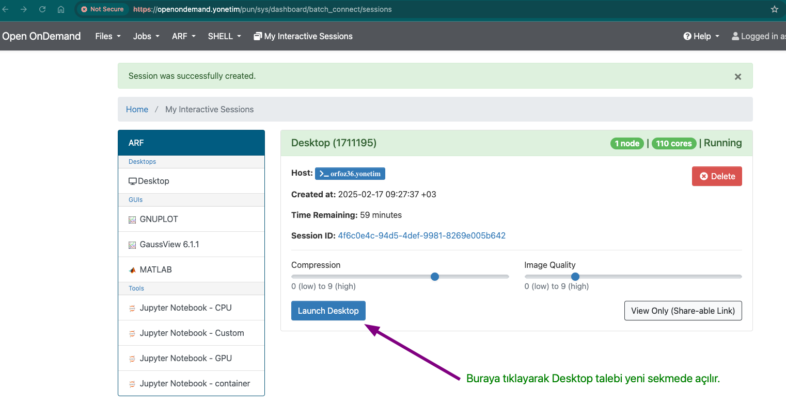

RStudio Kılavuzu#
Bu kılavuz RStudio kullanımı için gerekli kurulumları yapmaya yardımcı olmak amacıyla oluşturulmuştur. Kılavuzda aşağıdaki basamaklar anlatılmıştır:
Open OnDemand ile Masaüstü Alma#
Grafiksel arayüz kullanmak için, web tabanlı kullanıcı arayüzü olan Open OnDemand Arayüzü tercih edilebilir. İnteraktif arayüz ile ilgili bağlantı bilgilerine ARF Kullanıcı Arayüzüne Bağlantı sayfasından erişebilirsiniz.
Masaüstüne erişim için 5 aşamalı bir süreç uygulanmaktadır:
Web arayüzünden masaüstü menüsüne erişim:
Gerekli kaynak talebi:
Kuyrukta uygun kaynağın beklenmesi:
Masaüstü başlatma:
Terminal açma:
Bundan sonra, module av komutu ile merkezi sistemdeki modüller listelenir ve module load komutu ile istenilen modül yüklenebilir. Eğer istenilen modül mevcut değilse, kullanıcının ev dizinine gerekli program kurulabilir.
RStudio Başlatma#
Open OnDemand ile Masaüstü Alma adımlarını takip ederek masaüstüne erişim sağlandıktan sonra, RStudio’nun başlatılması için aşağıdaki adımlar izlenmelidir:
Terminal penceresi açılması ve modüllerin yüklenmesi:
RStudio’nun başlatılması:
Yüksek performanslı işlerin yapılması#
RStudio arayüzü interaktif analizler için iyi bir çözümken, daha yüksek performans gerektiren hesaplama işleri için SLURM kaynak yöneticisinin kullanılması daha uygundur. Temel SLURM Komutları ve SLURM Betik Özellikleri kılavuzları ile daha fazla bilgiye erişebilirsiniz.
Bu tip kullanımlar için yazılan R betiğinin çıktılarını ya da çalışma ortamını (R workspace) kaydetmek gerekecektir. Kod içerisinde oluşturulacak veri objesini
.rdsveya birden fazla veri objelerini.rdaya da.RDataolarak kayıt edilebilir. Bu objeler daha sonra interaktif RStudio ortamında görselleştirme vb. amaçlarla kullanılabilir. Örnek kullanımlar.rda:save(obj1, obj2, file=”/path/to/filename.rda”) ve yüklemek için load(“/path/to/filename.rda”) ile seçilmiş objeleri
save.image(“/path/to/workspace.rda”) ile bütün değişkenleri, verileri ve fonksiyonları saklanabilir ve yüklenebilir.
.rds: saveRDS(obj, file=”/path/to/filename.rds”) ve readRDS(“/path/to/filename.rds”)
Bahsedildiği gibi oluşturulan betikleri iş kümesine göndermeden önce işinize bağlı olarak küçük parametreler test etmek gerekebilir. Bu amaçla aşağıdaki kod ile
debugkuyruğundan 15 dakika boyunca her işte bir çekirdek kullanacak şekilde toplamda 10 iş çalıştırılacak bir sunucu istenebilir. Böylece ana bilgisayarı meşgul etmeden hesaplama kümesinde size ayrılan bir terminalde işlem yürütebilirsiniz.srunargümanları hakkında ayrıntılı bilgiyi burada bulabilirsiniz. İnteraktif İş Çalıştırma kılavuzu ile interaktif sunucuya bağlanma hakkında daha fazla bilgiye erişebilirsiniz.R betiğinin beklenildiği gibi çalıştığından emin olduktan sonra bunu hesaplama kümesi için kuyruğa göndermek için aşağıdaki gibi
.shbetiği oluşturup,sbatchkomutu kullanılabilir. Detaylı bilgi için ilgili kılavuzu takip edebilirsiniz.Slurm kodları (Tıklayınız)
slurm_is_verme_R.sh##!/bin/bash #SBATCH -p hamsi # kuyruk adi, isinizin calisma suresine gore guncelleyiniz. #SBATCH -A kullanici_adi # kendi kullanici adiniz ile degistiriniz. #SBATCH -J R_analizi # isin adi. #SBATCH -n 54 # is icin toplamda kullanilacak cekirdek adeti. #SBATCH -N 1 # is icin kullanilacak sunucu sayisi. #SBATCH --time=01:00:00 # isinizin suresi (1 saat) #SBATCH --workdir=/arf/scratch/kullanici_adi/test # isinizi calistiracaginiz dizin, kendi kullanici kodunuz ile guncellemeniz gerekmektedir. # Eğer .bashrc dosyası ayarlandıysa, oturumun otomatik olarak rstudio-env ile açılacaktır. # Ancak emin olmak adına aşağıdakiler de eklenebilir # module purge # module load comp/python/miniconda3 # conda activate rstudio-env # R calisma komutunuzu inputlariniz ile birlikte veriniz. R CMD BATCH R_script.R # İşiniz hakkında detaylı bilgiyi job_id.info dosyayına yazdırabiliriz. scontrol show job $SLURM_JOB_ID > ${SLURM_JOB_ID}.info exit
Bu dosya daha sonra iş kümelerine aşağıdaki gibi gönderilebilir:
sbatch slurm_is_verme_R.sh